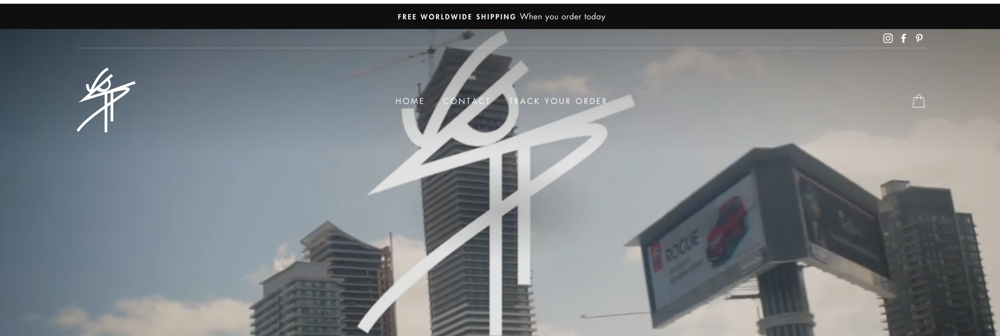
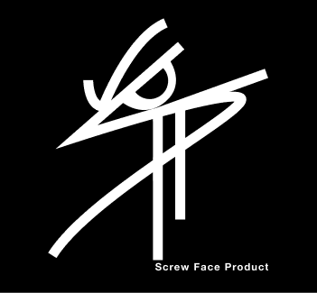
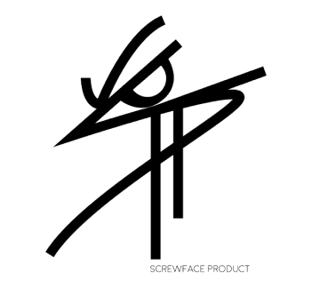
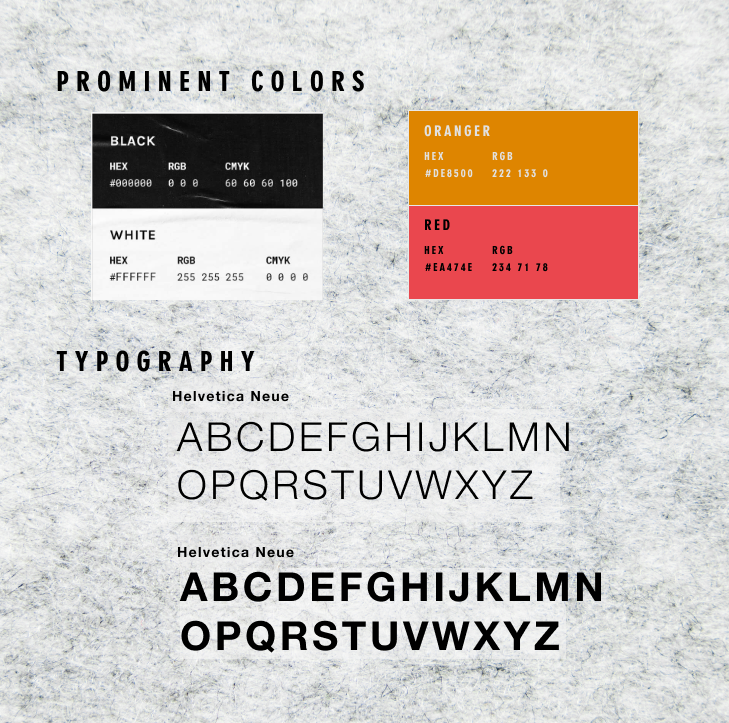
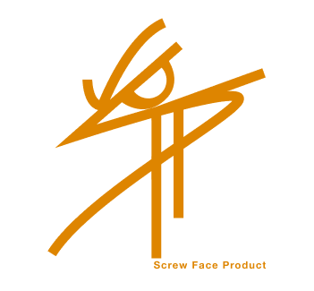
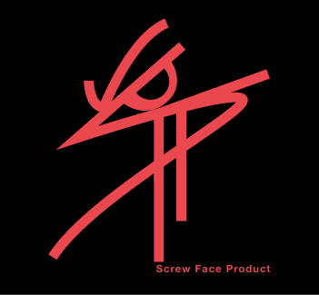
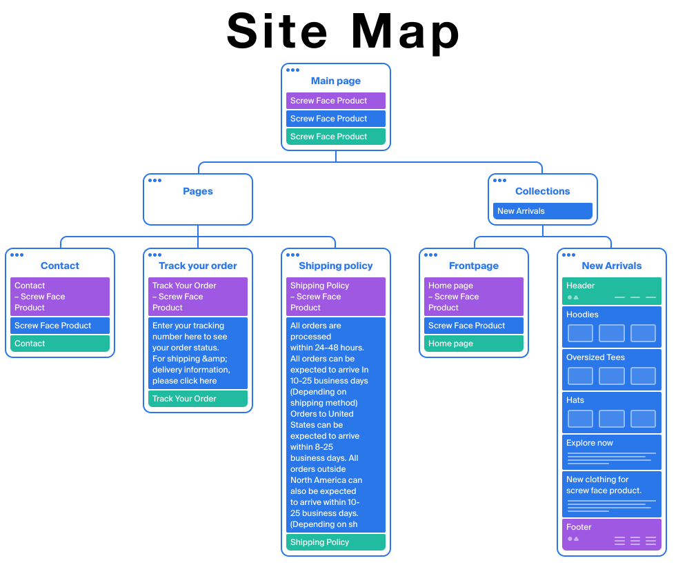

Screw Face Product is an urban streetwear brand looking to establish a strong online presence with a bold identity and a seamless user experience. The client approached Momer Designs with the goal of creating a visually striking brand and a user-friendly website. The brief involved not only selecting the best eCommerce platform but also designing a brand that reflected the gritty, rebellious spirit of street culture. The logo, a blend of the letters SFP with an eye resembling an angry face, was central to the brand’s identity.
Objective: To determine the best eCommerce platform for Screw Face Product based on previous research conducted by Momer Designs.
Approach:For this phase, we leveraged the insights and platform analysis from a recently completed project, UnOrdinry, where extensive research had already been conducted on eCommerce platforms such as Shopify, WooCommerce, and BigCommerce. Since the requirements and goals for Screw Face Product aligned closely with those of UnOrdinry—particularly in terms of scalability, ease of use, and customization—there was no need to repeat the research process.
Platform Selection:
Based on the findings from the UnOrdinry project (see UnOrdinry Case Study for detailed research results), Shopify was selected as the best platform for Screw Face Product. Its user-friendly interface, robust app ecosystem, and ability to scale with a growing fashion brand made it an ideal choice.
Outcome:
By referencing the comprehensive platform analysis from the UnOrdinry case study, we were able to expedite the decision-making process and move forward with Shopify as the eCommerce platform for Screw Face Product.
Objective: Create a bold, rebellious brand identity that resonates with the streetwear culture and makes Screw Face Product stand out.
Approach:
Outcome: Delivered a strong, edgy brand identity with a memorable logo that encapsulates the rebellious spirit of Screw Face Product, setting the tone for the brand’s web presence and future marketing.





Objective: Design a seamless and visually engaging website that allows users to easily browse and purchase products while staying true to the brand’s identity.
Methodology:
Outcome: Delivered wireframes and a clear sitemap that emphasized ease of use, focusing on fast navigation, product discovery, and a frictionless checkout process.

Here’s a user flow mapping for Screw Face Product based on the current structure of the website:
Objective: Bring the brand to life through a visually compelling, high-converting website that embodies Screw Face Product’s edgy persona.
Design Process:
Unique Features:
Outcome: Delivered a visually compelling, high-converting eCommerce website that perfectly aligns with the brand’s edgy identity. The design received positive feedback for its boldness, simplicity, and user-friendly experience.
Objective: Test the website for usability and performance, then launch it to the public while measuring early success.
Testing:
Launch Strategy:
Results:
The Screw Face Product project showcases Momer Designs’ ability to create bold, engaging brands and highly functional eCommerce websites. Through careful research, thoughtful branding, and meticulous design execution, Screw Face Product was positioned to make an immediate impact in the streetwear market. The combination of a unique brand identity and an intuitive, visually striking website allowed the brand to stand out and attract its target audience.
This case study captures the full design journey, from platform selection to brand identity and website creation, showcasing your skills as a strategic and creative product designer. Let me know if you’d like any adjustments!